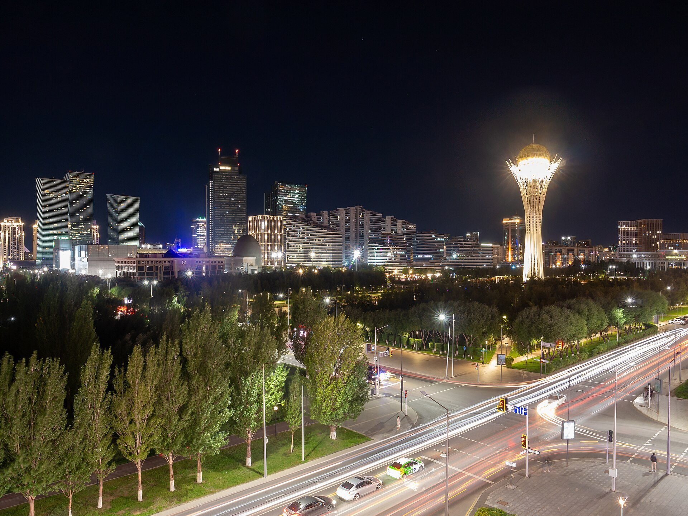

Kazakhstan opens a radiation-monitoring centre with U.S. support
According to the Times of Central Asia, Kazakhstan's Atomic Energy Agency opened a centre on 2 October to monitor radiation and coordinate responses to nuclear emergencies. The centre was set up with support from the U.S. NNSA.

Kazakhstan has opened a centre to monitor radiation and coordinate responses to nuclear and radiological emergencies. According to the Times of Central Asia, the centre began operating on 2 October 2026 and is run by Kazakhstan's Atomic Energy Agency. It was established with support from the U.S. Department of Energy's National Nuclear Security Administration (NNSA).
What the centre does
The centre's functions are to receive and analyse radiation data, enable information exchange between government agencies, coordinate inter-agency action during emergencies, and train specialists and run practical exercises. The primary source does not give the centre's formal name or its host city.
A heavy nuclear past
Kazakhstan's nuclear history is heavy: 456 nuclear tests were carried out at the Semipalatinsk test site between 1949 and 1989 (340 underground, 116 atmospheric); local experts estimate about 1.5 million people were exposed to fallout. The site was closed on 29 August 1991.
Uranium and a first nuclear plant
Kazakhstan is the world's largest uranium producer, mining roughly 23,270 tonnes in 2024 — about 38% of global supply. In a referendum on 6 October 2024, 71.12% of voters (turnout 63.66%) backed building the country's first nuclear power plant; the first plant is planned near the village of Ulken on Lake Balkhash.